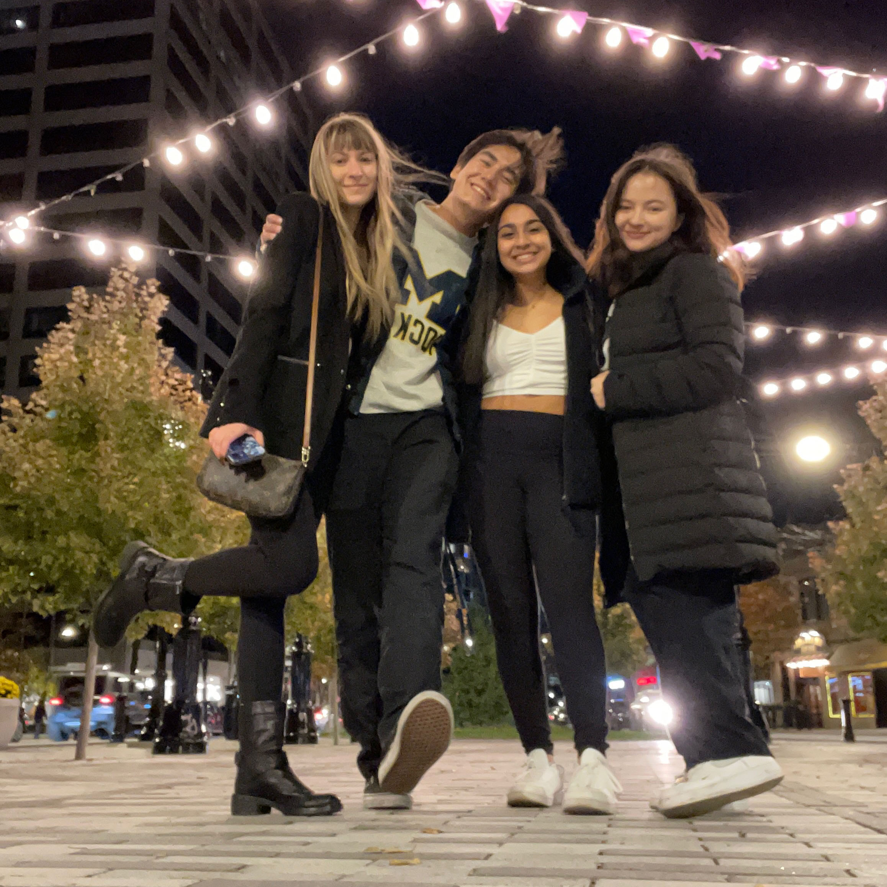
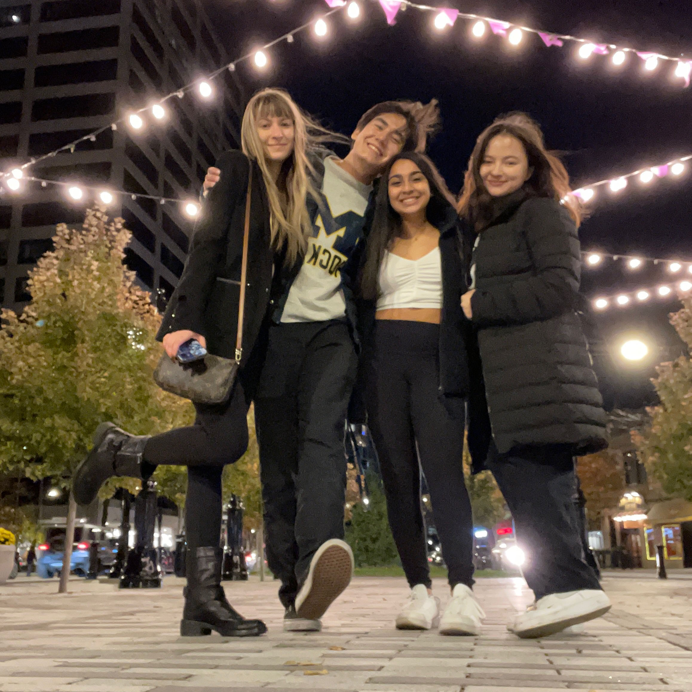

A little bit about what I do in my free time...I love being busy. Packing my Google Calendar is a personal hobby of mine, and as such, my personal life often blends together with my everyday life. But I wouldn't have it any other way. Below, find more about what I love!
 


Singing!
My favorite past time, I spend upwards of 7 hours a week singing with my best friends in my a cappella group Amazin' Blue, the University of Michigan's oldest all gender a cappella group. I have been singing most of my life and the opportunity to continue singing in college has been truly Amazin'! Although this is just my first year in the group, I have already traveled to Chicago to perform and put on a fabulous fall concert, but that is just the beginning. Upcoming, I am looking forward competing at ICCAs (yes like Pitch Perfect) and at BOSS, a vocal competition in Boston. Be sure to check out Amazin' Blue on Spotify!! Outside of my aca-rehearsals, I also sing with the University of Michigan Arts Chorale, the non-major choir on campus.


Skiing!
The first time I hit the ski slopes was at the age of 3, held tight on my ski leash. Since then, my love for skiing has only grown. Taking second in my first race at age 8 (yes, that is me with the long hair - I donated three times between first and eigth grade) and joining my high school varsity ski team, skiing has always been a fun outlet to spend time outdoors with my friends and family. Now on the Michigan ski team, I love taking to the slopes every weekend in January and February (and taking down MSU)!


Knitting!
Although true free time is hard to come by, I have taken akin to the yarn arts. Whether Zooming into a meeting, watching a movie, or just sitting in my room with some music, you will probably find me with knitting kneetles in hand. Learning to knit and weave from a young age has been a crucial aspect to my creative expression and identity. Check out some of my recently finished projects!